Designed a proactive mobile experience that delivers timely daily briefs and action cues through smart entry points — helping users start their day with clarity and momentum.
Users jump across emails, chats, and meetings just to understand their day. Even simple planning becomes effort-heavy when context is scattered across five different apps. Most tools remain reactive — they wait to be opened instead of helping users prepare.
"The problem wasn't missing information — it was that none of it surfaced when it actually mattered."
How much effort users spent before their first productive action each morning
The aim was to make the product feel like an assistant that prepares you, not a tool you have to figure out. That meant surfacing relevant context at the right moment and making the path to action obvious.
Shifting how users experience the start of their workday on mobile
Proactive assistance appears contextually across the day — starting with a daily brief and evolving into action-driven prompts, optimised for quick scanning on mobile. Rather than designing individual moments in isolation, I built a minimal, repeatable framework every proactive experience had to follow.
Trigger → Actionable Response → Feedback
This gave PMs, engineers and designers a shared language and a clear bar for what "good" looks like — preventing one-off designs and ensuring quality consistency across apps and agent types.
Delivered only when relevant — always answering "What can I do right now?" No clear action, no moment shipped.
Emails surface like inbox summaries, meetings follow calendar layouts. Familiarity lowers cognitive load — no learning curve needed.
Multiple scenarios plug into one surface without added complexity — daily brief, meeting prep, catch-ups, agent actions. One entry point, infinite use cases.
Iterations across entry strategies, response formats, and content depth — balancing usefulness with intrusiveness.
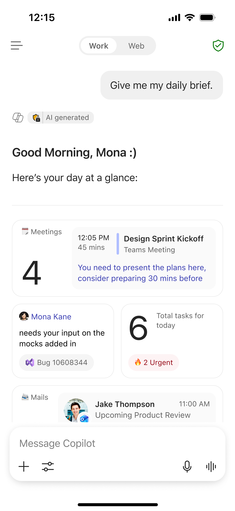
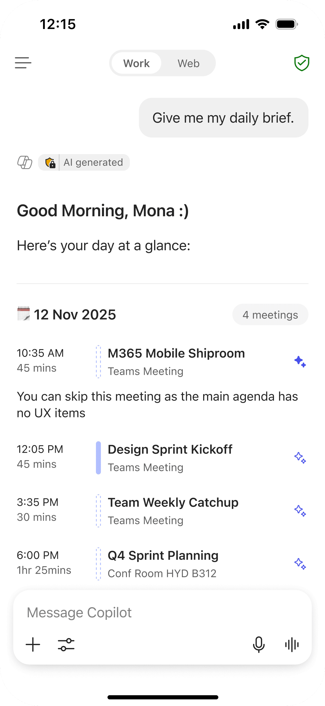
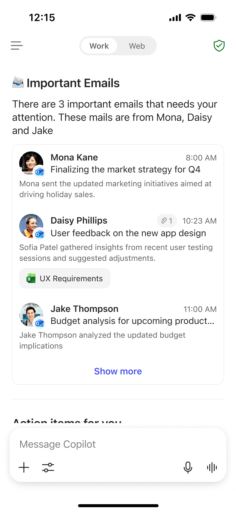
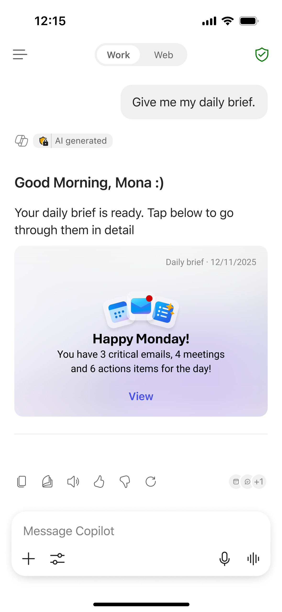
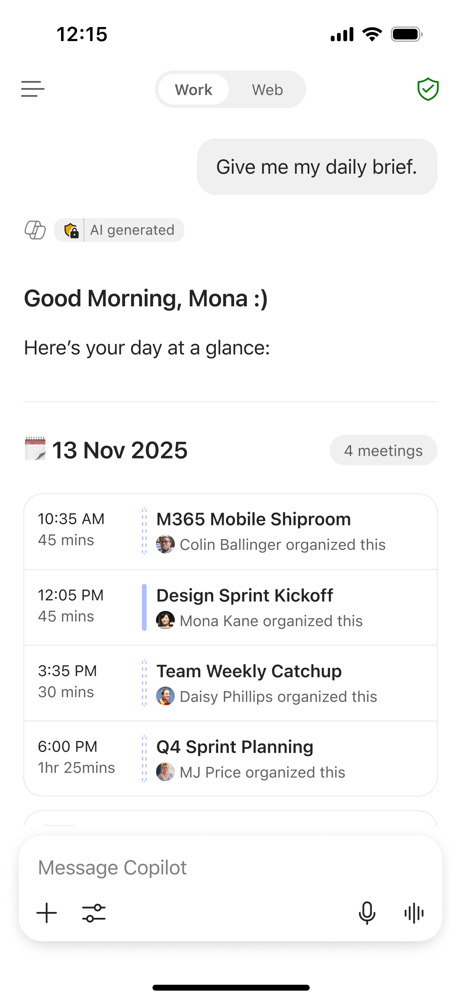
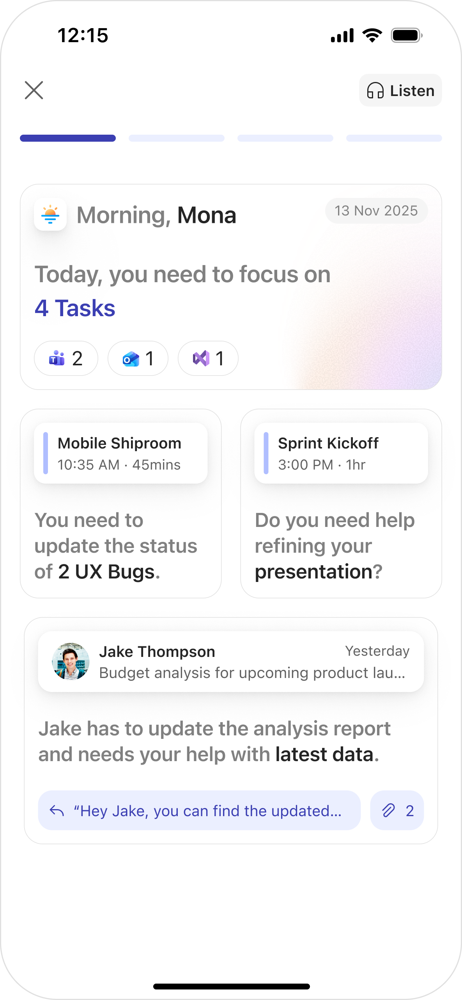
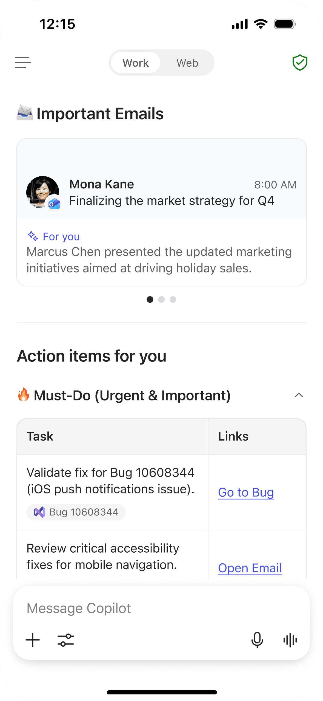
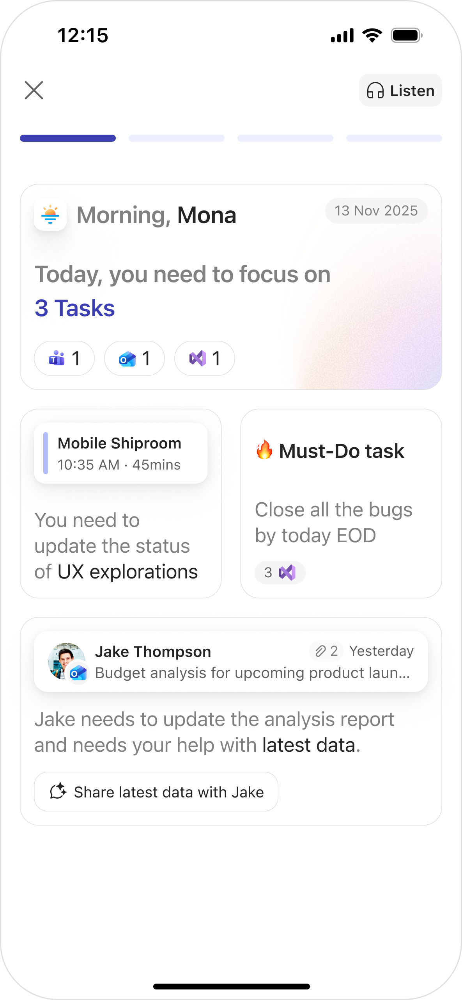
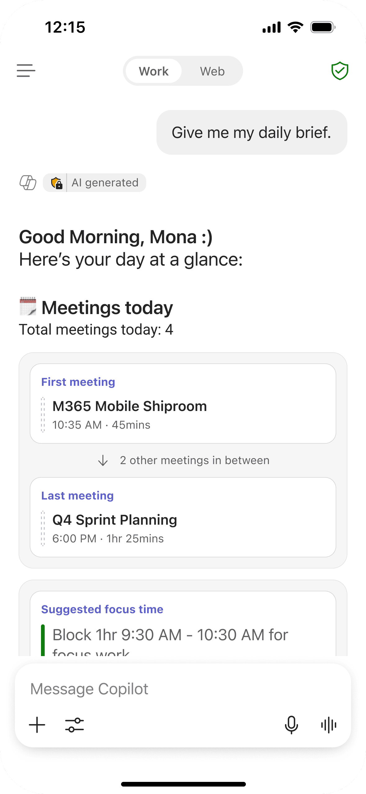
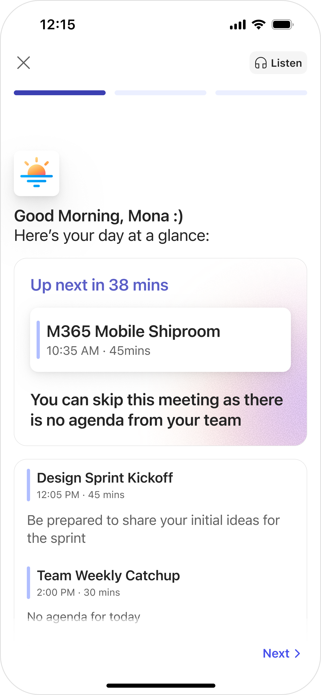
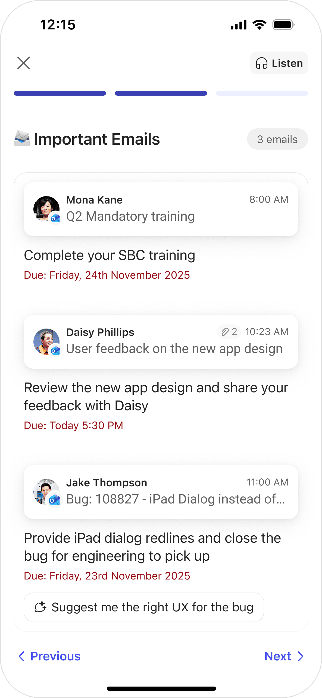
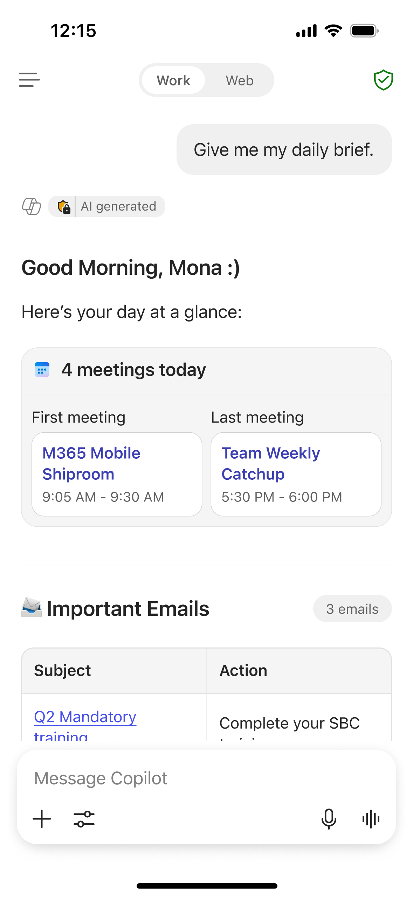
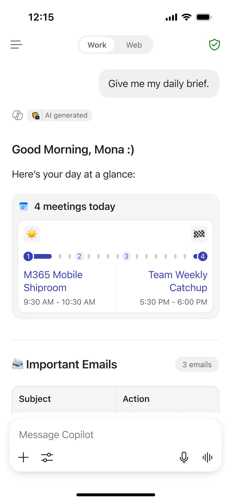
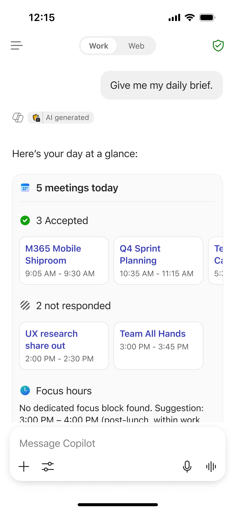
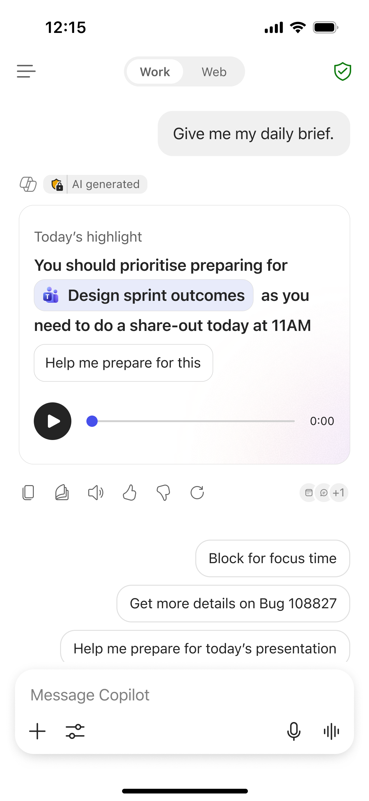
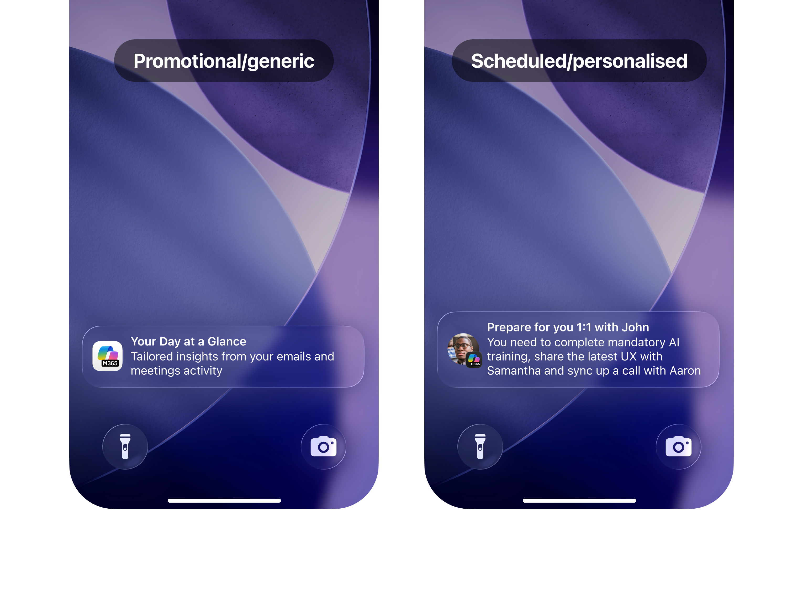
Promotional notifications are used lightly for discovery. Scheduled notifications let users receive a daily brief or action summary at a chosen time — creating a consistent habit without feeling invasive.
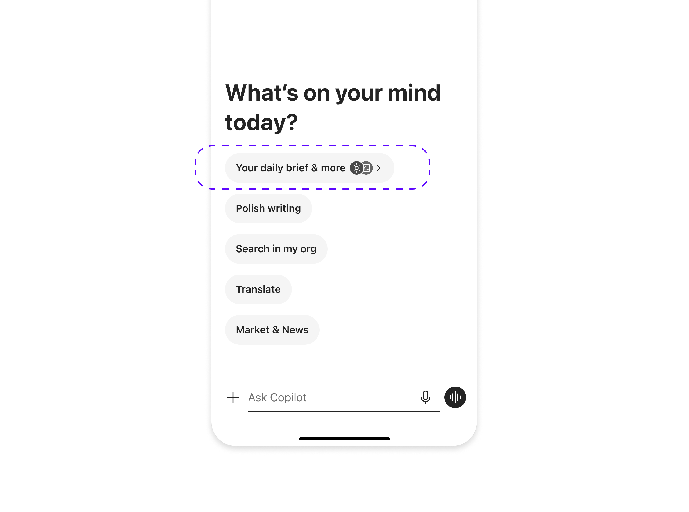
Within the product, the entry point sits in the chat screen. The first pill hosts the daily brief and other scenarios too. A subtle visual cue paired with haptic feedback makes discovery feel playful and natural.
Meeting summaries, email highlights, and people cues — surfaced in a scannable layout optimised for the start of your day.
Tasks assigned across email, chat, and meetings — consolidated into a single actionable list with source context and quick actions.
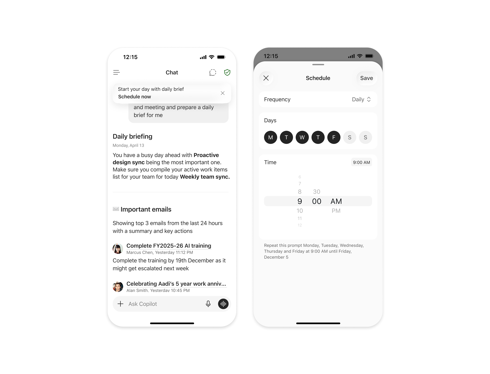